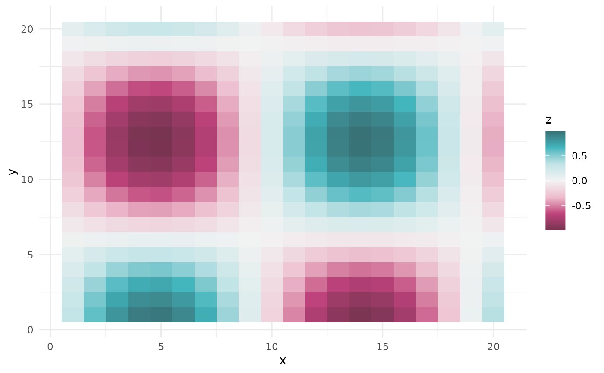

scale_colour_stadl.RdSTADL color and fill scales for ggplot2
scale_colour_stadl(
palette = "raspberry_turquoise",
discrete = FALSE,
reverse = FALSE,
midpoint = NULL,
...
)
scale_color_stadl(
palette = "raspberry_turquoise",
discrete = FALSE,
reverse = FALSE,
midpoint = NULL,
...
)
scale_fill_stadl(
palette = "raspberry_turquoise",
discrete = FALSE,
reverse = FALSE,
midpoint = NULL,
...
)Name of a palette, see stadl_palette_names().
Logical. Use a discrete scale (categorical data)? Default
FALSE (continuous data).
Logical. Reverse the order of the colors?
For continuous scales with a diverging palette: the data
value mapped to the neutral middle color. Defaults to 0. Ignored
otherwise.
Other arguments passed to ggplot2::discrete_scale() or
ggplot2::scale_colour_gradientn(), e.g. name, limits, breaks.
A ggplot2 scale.
if (requireNamespace("ggplot2", quietly = TRUE)) {
library(ggplot2)
# categorical data
ggplot(iris, aes(Sepal.Width, Sepal.Length, colour = Species)) +
geom_point(size = 2) +
scale_colour_stadl("turquoise", discrete = TRUE) +
theme_minimal()
# continuous data, sequential palette
ggplot(faithfuld, aes(waiting, eruptions, fill = density)) +
geom_raster() +
scale_fill_stadl("raspberry") +
theme_minimal()
# continuous data around a center, diverging palette
df <- expand.grid(x = 1:20, y = 1:20)
df$z <- with(df, sin(x / 3) * cos(y / 4))
ggplot(df, aes(x, y, fill = z)) +
geom_tile() +
scale_fill_stadl("raspberry_turquoise", midpoint = 0) +
theme_minimal()
}
